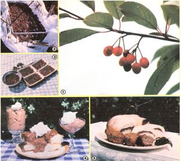

Photos By Patricia Cravener And The Author
[1] Wild chokecherry fruit (this species is also called the ""pin cherry""). [2] l'lit, berries can be sun-dried in cloth-covered baskets or . . . [3] in recycled plastic food trays. [4] Use Prunus flour to make pudding and cake filling or . . . [5] bread rolls and muffin